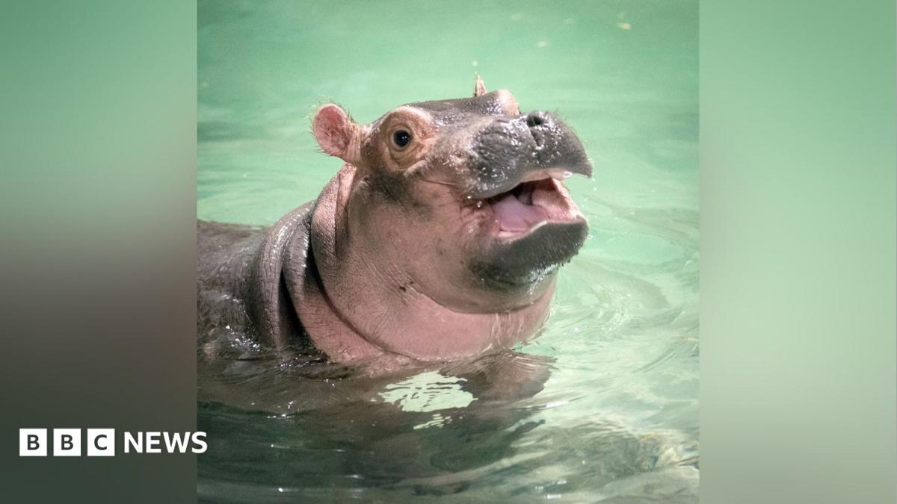

Science · 20 Nov 2026
Fiona the hippo dies after failed effort to remove swallowed hat

World-famous hippopotamus Fiona has died after several failed attempts by vets to remove a woolly hat that she accidentally swallowed, the Cincinnati Zoo announced Thursday.
Multiple independent publishers are reporting on the same development: Fiona the hippo dies after failed effort to remove swallowed hat.
The available reports place the development in the Science category. The accounts were compared for agreement on the central event rather than simply shared names or broad topics.
One of the available reports describes the development this way: World-famous hippopotamus Fiona has died after several failed attempts by vets to remove a woolly hat that she accidentally swallowed, the Cincinnati Zoo announced Thursday.
Readers should consult the linked source reports for additional context, updates and details that may change as the story develops.
Sources
This article was produced by the C. O. Eric AI Newsroom from the cited sources. It is published only after automated evidence and safety checks.